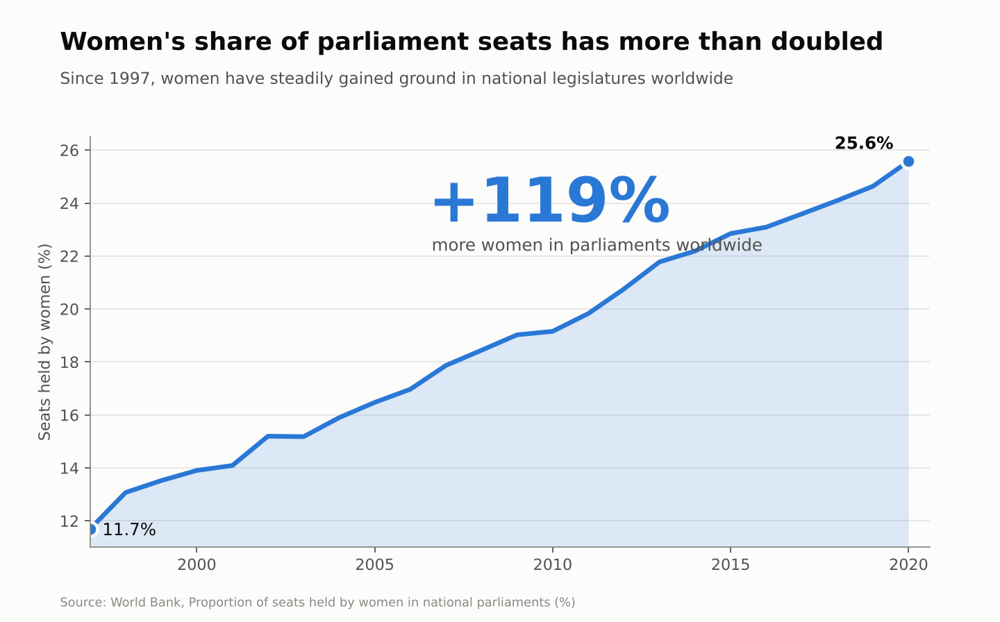
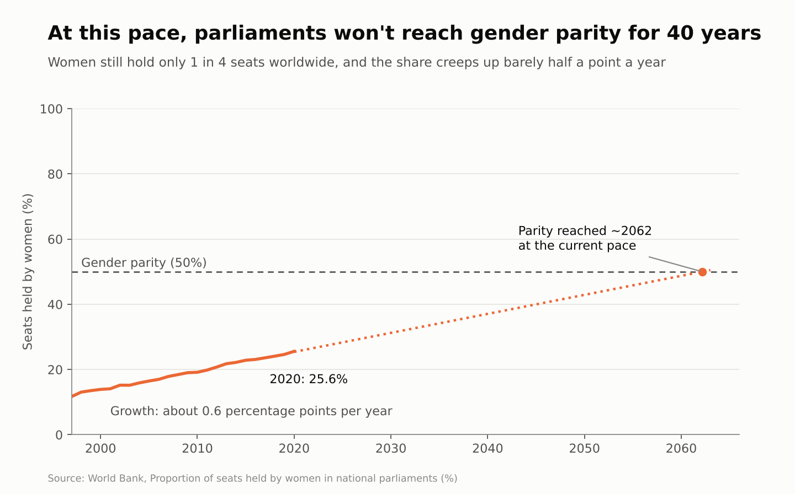

Proposition: Women's political representation is improving rapidly.
FOR the Proposition

Design Decisions and Rationale:
- Truncated y-axis (11%–26.5%). (Score: −2) Starting the axis just below the first value stretches a 14-point rise across the full height of the chart, so a slow, steady climb looks steep. The axis is labeled, so the trick is technically visible, but few readers check where an axis starts.
- Relative change (+119%) as the headline. (Score: −1.5) We reported percent growth instead of the 14-percentage-point increase. Both are correct, but percent growth on a small starting value always sounds dramatic, and we made it the largest text on the chart.
- "More women in parliaments" wording. (Score: −2) The callout describes a change in share as if it were a change in the number of women, which invites a claim the data doesn't support.
- Filled area and a single bold color. (Score: −0.5) The shaded area and heavy stroke make the trend feel substantial and continuous. This is persuasive styling rather than a distortion of the data.
- Accurate endpoints and source. (Score: +1) We labeled the true 1997 and 2020 values and cited the source, so a careful reader can recover the real 14-point change.
AGAINST the Proposition

Design Decisions and Rationale:
- Full 0–100% y-axis. (Score: +1) Showing the whole range is the conventional, honest choice for a percentage. We chose it on purpose, though, because the empty space makes real growth look flat.
- A 50% parity reference line. (Score: +1) Parity is a reasonable benchmark, but it also sets the bar for what counts as "enough" and keeps the line looking far from the goal.
- Straight-line projection to about 2062. (Score: −1) We fit a linear trend to 1997–2020 and extended it 40 years, assuming the pace never speeds up through new quotas or reforms. The dotted style marks it as a projection, but the "40 years" headline presents it as a fact.
- Minimizing language ("only 1 in 4," "barely half a point"). (Score: −1) The subtitle describes accurate numbers with words that make them sound small. The growth rate is about 0.58 points per year, so "barely half a point" rounds down in a direction that helps our side.
- Stretched time axis. (Score: −0.5) Extending the x-axis to 2066 squeezes the 23 years of real data into the left third of the chart, so most of what readers see is the projection.
Final Reflection
We started by looking for an indicator with a clear trend that could honestly be described in two different ways. Women's share of parliament seats worked well because the data itself is simple: a steady climb from about 12% to 26% over 23 years. Almost nothing about the data changed between our two charts. The same line became evidence of rapid progress or of a stalled one depending on the axis range, whether we described change in percent or in percentage points, and which benchmark we put next to it.
Our definition of an ethical visualization is one that lets a reader reach the conclusion the data supports, even if the designer has a point of view. Every chart makes framing choices, and choices like the parity line or a full 0–100% axis are persuasive without being misleading, because they add context the reader can judge. A chart becomes deceptive when it depends on the reader not noticing something, such as a truncated axis, a percent change presented as a head count, or a projection presented as a certainty.
Where we draw the line: emphasis and framing are acceptable when they are visible and the underlying numbers stay accurate, and they become misleading when the visual impression contradicts what the labeled numbers say. By that standard our FOR chart crossed the line more often than our AGAINST chart, which matches our design-decision scores. The exercise made us more skeptical of headline numbers like "+119%" and more likely to check axis ranges before trusting a trend.